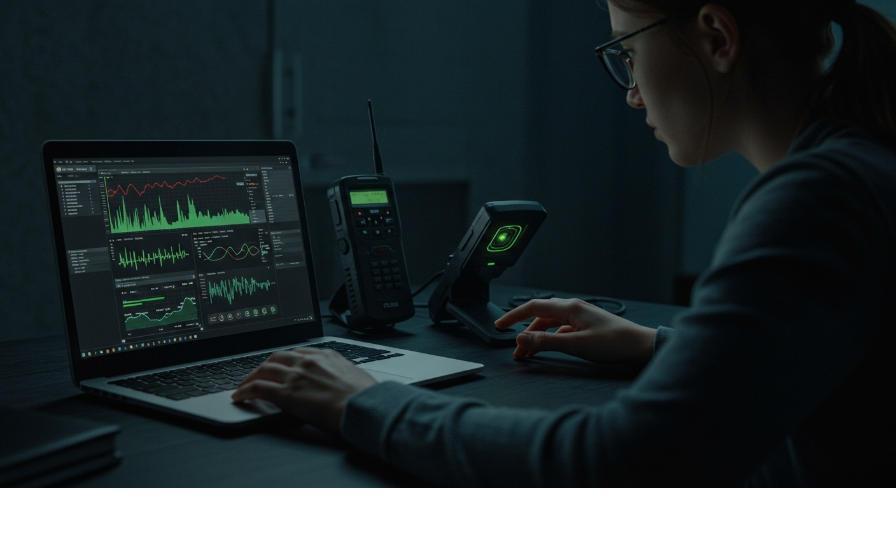

Scanner Listening & Local Frequencies (Legal & Safe)
Objective
Monitor useful radio traffic during emergencies within legal boundaries to improve your situational awareness.
What to Monitor
- Weather broadcasts (NOAA/region‑equivalent).
- Public information stations and local AM/FM news.
- Community nets (ham radio) as listeners where permitted.
Setup
- Portable scanner or SDR; program local weather and public info channels.
- External antenna near a window for better reception.
Ethics & Law
Follow your jurisdiction’s laws on monitoring and use of information. Do not interfere or transmit on restricted channels.
Listening Discipline
- Keep a log: time, frequency, summary.
- Use headphones at night to avoid waking others.
Real Example
A neighborhood watch logged updates from weather radio and a community net and posted summaries twice daily, improving coordination.
Checklist
- Scanner/SDR + antenna
- Printed local frequency list
- Notepad
Contingencies
- Heavy interference → move antenna, shorten cable, try ferrite chokes.
After‑Action
Refine your frequency list after each event; remove noisy, useless channels.
← Previous | All Articles | Next →